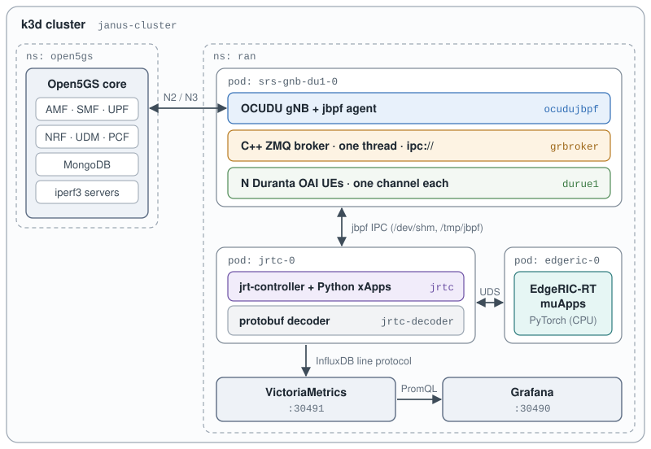

Open AI-RAN Tutorial: In-RAN Telemetry and Control with jbpf Codelets¶
This tutorial builds a complete 5G testbed inside one k3d (Kubernetes) cluster: the jbpf-instrumented
OCUDU gNB, the jrt-controller (jrtc), an Open5GS core and N Duranta OAI nr-UEs over
ZMQ, each UE with its own emulated channel. Three demos then use it for programmable RAN control.
The programmable unit is a codelet: a small eBPF program loaded into the running gNB at a hook on the RAN datapath, and unloaded again, with no recompile or restart. Codelets run on Microsoft’s jbpf framework.
Demo |
Description |
|---|---|
Per-UE channels replayed from SNR traces and switched while the cell carries traffic |
|
EdgeRIC-RT: a scheduler muApp in the loop every TTI, including a PPO policy trained online |
|
Demo 3: TCP flow optimization with real-time buffer management |
RLC buffer control from a codelet, cell-wide and per UE, to remove bufferbloat |
Note
Do Parts 1 and 2 first; every demo builds on them.
Architecture¶


Part 1: System Setup (one time)¶
Prerequisites¶
One Linux host with
docker,k3d(v5+),kubectl,helm(v3+) andgit, and your user in thedockergroup.At least 8 CPU cores. The ZMQ chain runs in real time; our server has 2 × Xeon Gold 5218.
An SSH key with access to
edgeric-ocudu-jbpf,ocudu-jbpfandduranta-ue: the submodules clone over SSH.
To install the tools on Ubuntu 24.04 (x86_64), the OS of our server, at the versions we use:
# git, curl, python3 (the scripts run it on the host) and Docker
sudo apt-get update
sudo apt-get install -y git curl ca-certificates python3 docker.io
# run docker without sudo: join the docker group and pick it up in a new shell
sudo usermod -aG docker "$USER"
newgrp docker # or log out and back in
docker run --rm hello-world
# k3d v5.8.3, which creates a k3s v1.31 cluster
curl -s https://raw.githubusercontent.com/k3d-io/k3d/main/install.sh | TAG=v5.8.3 bash
# kubectl, within one minor version of that cluster
curl -LO https://dl.k8s.io/release/v1.31.5/bin/linux/amd64/kubectl
sudo install -m 0755 kubectl /usr/local/bin/kubectl && rm kubectl
# helm v3
curl -fsSL https://raw.githubusercontent.com/helm/helm/main/scripts/get-helm-3 \
| bash -s -- --version v3.18.4
# check
nproc # 8 or more
k3d version && kubectl version --client && helm version --short && git --version
The checks should print the following. nproc prints your core count, 64 on our server.
$ docker run --rm hello-world
...
Hello from Docker!
This message shows that your installation appears to be working correctly.
...
$ nproc
64
$ k3d version && kubectl version --client && helm version --short && git --version
k3d version v5.8.3
k3s version v1.31.5-k3s1 (default)
Client Version: v1.31.5
Kustomize Version: v5.4.2
v3.18.4+gd80839c
git version 2.43.0
Clone the repository¶
git clone -b open-ai-ran-tutorial git@github.com:ucsdwcsng/edgeric-ocudu-jbpf.git
cd edgeric-ocudu-jbpf
git submodule update --init --recursive # ocudu-jbpf (gNB), duranta-ue (UE), jbpf_protobuf (SDK)
export REPO_ROOT="$(pwd)"
export CLUSTER=janus-cluster
Submodule |
What it is |
|---|---|
|
the jbpf-instrumented OCUDU gNB, with the control hooks used in the demos |
|
the Duranta OAI |
|
the jbpf protobuf and serializer SDK |
Create the cluster¶
k3d cluster create "$CLUSTER" \
--volume "$REPO_ROOT:$REPO_ROOT" \
--port "30400-30500:30400-30500@loadbalancer"
export KUBECONFIG="$(k3d kubeconfig write "$CLUSTER")"
# Multus CNI (the RAN pods use it)
kubectl apply -f https://raw.githubusercontent.com/k8snetworkplumbingwg/multus-cni/master/deployments/multus-daemonset-thick.yml
kubectl wait --for=condition=ready pod -l app=multus -n kube-system --timeout=120s
The --volume bind mount lets the pods use the codelets, xApps and muApps straight from your
checkout. k3d publishes ports 30400-30500 on the host, which is how you reach Grafana.
Deploy the 5G core and the subscribers¶
kubectl create namespace open5gs
helm install open5gs "$REPO_ROOT/open5gs" -n open5gs -f "$REPO_ROOT/open5gs/values-5g.yaml"
kubectl wait --for=condition=ready pod -l app.kubernetes.io/name=mongodb -n open5gs --timeout=180s
# pcf/udr start before mongodb is ready: restart them once
kubectl get pods -n open5gs --no-headers | awk '/pcf|udr/{print $1}' | xargs -r kubectl -n open5gs delete pod
kubectl get pods -n open5gs -w # Ctrl-C when all pods are 1/1
Add four subscribers (PLMN 99970, IMSIs ...001 to ...004). The bring-up script adds more on
demand when you start more than four UEs.
POP=$(kubectl get pods -n open5gs --no-headers | awk '/populate/{print $1}' | head -1)
K=00112233445566778899aabbccddeeff
OPC=63bfa50ee6523365ff14c1f45f88737d
for IMSI in 999700000000001 999700000000002 999700000000003 999700000000004; do
kubectl exec -n open5gs "$POP" -- open5gs-dbctl add "$IMSI" "$K" "$OPC"
done
kubectl exec -n open5gs "$POP" -- open5gs-dbctl showall | grep -c imsi # expect 4
Build the images (about 30 min)¶
# OCUDU + jbpf gNB (~15 min, clang-18), tagged :ipc for the ipc:// link to the broker
docker build -t ocudu-gnb-jbpf:ipc -f ocudu-jbpf/docker/Dockerfile ocudu-jbpf
k3d image import ocudu-gnb-jbpf:ipc -c "$CLUSTER"
# Duranta OAI nr-UE with the channel model and trace replay
docker build -t duranta-nr-ue:local duranta-oai-ue
k3d image import duranta-nr-ue:local -c "$CLUSTER"
# broker container image, and the C++ ZMQ broker that runs in it (the binary is gitignored)
docker build -t gnuradio-broker:local broker
k3d image import gnuradio-broker:local -c "$CLUSTER"
bash duranta-oai-ue/broker_cpp/build.sh
# EdgeRIC-RT muApp host for Demo 2 (pod edgeric-0); build it before deploying the RAN pods
docker build -t edgeric:local edgeric-rt
k3d image import edgeric:local -c "$CLUSTER"
Build the codelets¶
The demos load these codelet sets into the running gNB. The .o files are gitignored, so a fresh clone
has none; the build takes about a minute.
Codelets |
What they do |
Used in |
|---|---|---|
|
per-UE identities and statistics for the dashboard xApp |
|
|
RLC queuing latency and buffer occupancy, per UE and bearer |
|
|
the EdgeRIC-RT scheduling loop and its dashboard |
Demo 2 |
|
RLC buffer limits, per UE and cell-wide |
Demo 3 |
cd "$REPO_ROOT/jrtc-apps/codelets"
for d in ue_contexts mac rlc pdcp rrc ngap upt \
edgeric_rt dashboard_realtime_scheduling bufctl; do
./make.sh -d "$d"
done 2>&1 | grep -E "^Building|^---|terminates|^[a-z_]+\.cpp: Failed"
cd "$REPO_ROOT"
# Demo 3's caps, one object per size: off 16k 64k 256k 1m
bash buffer-control-experiments/bufcap.sh build
Each codelet prints its verifier result. Program terminates within N instructions means the jbpf
verifier accepted it; Failed verification means it will not load, and
Demo 3 covers the usual causes.
The grep keeps only these lines; drop it to see the full build log. Abridged:
Building ue_contexts
--------- cucp_uemgr_ue_add.cpp ----------------------------------------------
Program terminates within 118 instructions
...
Building upt
--------- gtp_arrival.cpp ----------------------------------------------
Program terminates within 348 instructions
...
Building edgeric_rt
--------- rt_ctrl.cpp ----------------------------------------------
Program terminates within 2724 instructions
--------- rt_report.cpp ----------------------------------------------
Program terminates within 99 instructions
Building dashboard_realtime_scheduling
--------- rts_stats.cpp ----------------------------------------------
Program terminates within 1312 instructions
Building bufctl
--------- rlc_ctrl.cpp ----------------------------------------------
Program terminates within 892 instructions
--------- bufcap.cpp -> bufcap_off.o (CAP_BYTES=0) ---------
verifier: OK
built bufcap_off (0 bytes)
...
--------- bufcap.cpp -> bufcap_1m.o (CAP_BYTES=1048576) ---------
verifier: OK
built bufcap_1m (1048576 bytes)
Demo 3’s caps are one object per size, all built from codelets/bufcap/bufcap.cpp and all with the
codeletset id bufcap, so only one is loaded at a time. bufcap_off writes the configured limit back,
and bufcap.sh load builds any other size on first use, for example 128k.
The other directories in jrtc-apps/codelets are not used in this tutorial; build any of them the same
way. make does not track header changes: after editing a codelet’s header, delete that directory’s
.o files before you rebuild it.
Deploy the RAN pods¶
sed "s#__REPO_ROOT__#$REPO_ROOT#g" \
"$REPO_ROOT/jrtc-apps/containers/Helm/k3d-values.yaml" > /tmp/k3d-values.local.yaml
kubectl create namespace ran
USE_JRTC=1 helm install ran "$REPO_ROOT/jrtc-apps/containers/Helm" -n ran \
-f "$REPO_ROOT/jrtc-apps/containers/Helm/jrtc.yaml" \
-f /tmp/k3d-values.local.yaml
kubectl -n ran rollout status statefulset/srs-gnb-du1 --timeout=300s
kubectl get pods -n ran # srs-gnb-du1-0, jrtc-0 and edgeric-0 Running
This deploys the scaffolding: the gNB pod with its jbpf IPC volumes and the srs-gnb-du1-proxy
service, jrtc-0 and edgeric-0. The gNB, broker and UEs run as ephemeral containers in the gNB
pod, added in Part 2.
Deploy Grafana and VictoriaMetrics¶
kubectl create configmap grafana-upt-dashboard -n ran \
--from-file=upt-dashboard.json="$REPO_ROOT/telemetry/upt-dashboard.json" \
--dry-run=client -o yaml | kubectl apply -f -
kubectl apply -f "$REPO_ROOT/telemetry/telemetry-stack.yaml"
kubectl rollout status deployment/grafana -n ran --timeout=120s
xApps push metrics to VictoriaMetrics in InfluxDB line protocol, and Grafana queries it. Push at sub-second granularity is the reason for VictoriaMetrics: Prometheus’s pull model has a 1 s scrape floor.
Part 2: Bring Up the Testbed (every run)¶
Shell setup¶
In every new terminal, as your own user (not sudo):
cd <your clone of edgeric-ocudu-jbpf>
export REPO_ROOT="$(pwd)" CLUSTER=janus-cluster
export PATH="$HOME/.local/bin:$PATH"
export KUBECONFIG="$(k3d kubeconfig write "$CLUSTER")"
Start the cluster¶
Skip this when kubectl get pods -n ran already works.
k3d cluster start "$CLUSTER"
kubectl get pods -n open5gs; kubectl get pods -n ran # wait until all are Running
k3d image import duranta-nr-ue:local ocudu-gnb-jbpf:ipc -c "$CLUSTER" # only after rebuilding an image
Re-point the SMF at the UPF¶
Required after every cluster restart: the UPF comes back with a new pod IP, and the SMF reads it from static configuration. Skip this and the UEs attach but pass no data.
UPFPOD=$(kubectl get pods -n open5gs --no-headers -o custom-columns=:.metadata.name | grep '^open5gs-upf-')
UPFIP=$(kubectl get pod -n open5gs "$UPFPOD" -o jsonpath='{.status.podIP}'); echo "UPF=$UPFIP"
kubectl get cm -n open5gs open5gs-smf -o json > /tmp/smf.json
python3 - "$UPFIP" <<'PY'
import json,re,sys; ip=sys.argv[1]
d=json.load(open("/tmp/smf.json")); k=list(d["data"])[0]
d["data"][k]=re.sub(r"(\n upf:\n - address:)[^\n]*", r"\g<1> "+ip, d["data"][k], count=1)
assert ("address: "+ip) in d["data"][k]; json.dump(d,open("/tmp/smf.json","w")); print("smf upf ->",ip)
PY
kubectl replace -f /tmp/smf.json
kubectl rollout restart deploy/open5gs-smf -n open5gs && kubectl rollout status deploy/open5gs-smf -n open5gs
kubectl logs -n open5gs deploy/open5gs-upf --tail=20 | grep -i associat # expect "PFCP associated"
Recreate the gNB pod with its containers¶
The broker (grbroker), UE (durue1) and gNB (ocudujbpf) containers are ephemeral: a cluster
restart stops them, and they cannot be re-added under the same name. Recreate the pod, then add them.
kubectl delete pod -n ran srs-gnb-du1-0
until kubectl wait -n ran --for=condition=Ready pod/srs-gnb-du1-0 --timeout=300s 2>/dev/null; do sleep 3; done
kubectl debug -n ran srs-gnb-du1-0 --image=gnuradio-broker:local --image-pull-policy=IfNotPresent -c grbroker --target=gnb -- sleep infinity
kubectl debug -n ran srs-gnb-du1-0 --image=duranta-nr-ue:local --image-pull-policy=IfNotPresent -c durue1 --target=gnb --profile=sysadmin -- sleep infinity
# the gNB needs the jbpf IPC volume mounts, which kubectl debug cannot set
kubectl patch pod -n ran srs-gnb-du1-0 --subresource ephemeralcontainers --type strategic \
-p "$(sed 's/ocudu-gnb-jbpf:local/ocudu-gnb-jbpf:ipc/' ocudu-jbpf/deploy/ephem_jbpf.json)"
sleep 15
kubectl get pod -n ran srs-gnb-du1-0 -o jsonpath='{range .status.ephemeralContainerStatuses[*]}{.name}={.state}{"\n"}{end}' # all 3 running
Bring up N UEs¶
bash scripts/setup_zmq_chan_demo.sh 4 --telemetry # ~3-5 min
The script stops anything still running, provisions the IMSIs, creates one network namespace per UE,
then starts the C++ broker, the gNB and the UEs, in that order. It puts the gNB and broker threads on
SCHED_FIFO and the testbed on one NUMA node (zmq_tune.sh), and checks that every UE attached:
################ verify ################
ue1 ip=10.45.0.37 t 6.0 s, d 50.0 m, DL SNR 30.0 dB (ref -27.3 dBFS), UL SNR 30.0 dB, UL gain 8.4 dB
...
SETUP DONE. 4 UE(s) attached.
Option |
Effect |
Used in |
|---|---|---|
|
fresh |
Grafana, Demos 1 and 3 |
|
a base channel per UE from a table (default: a static 30 dB link) |
Demo 1 |
|
per-UE SNR traces from attach, switchable at run time |
Demos 1 and 2 |
|
fresh |
Demo 2 |
|
no channel model and no added noise |
|
|
split the run across two terminals: the RAN with its console, then the UEs |
Demos 1, 2 and 3 |
Any N up to 64 works; four UEs run at 100 % of real time on our server. ZMQ cannot reconnect a running chain, so every run restarts the broker, gNB and UEs together. Re-running the script is also how you recover from a partial attach.
Traffic¶
bash scripts/traffic_nue.sh start # one DL TCP flow per UE, from the UPF, CUBIC
bash scripts/traffic_nue.sh status # per-UE and total goodput at the UEs, last 10 s
bash scripts/traffic_nue.sh stop
start also takes --cc bbr, --udp 40M, --ue N, --time S and --rate R. With four UEs on clean
channels the cell carries about 59 Mbit/s of TCP in total.
Check the run¶
bash scripts/zmq_rt_check.sh # % of real time, lateness, CPU, each UE's channel
kubectl exec -n ran srs-gnb-du1-0 -c ocudujbpf -- tail -12 /tmp/gnb.stdout # per-UE CQI, MCS, BLER, DL bit rate
Stop¶
bash scripts/traffic_nue.sh stop
bash scripts/stop_demo.sh # UEs, gNB, broker and tcp_probe
k3d cluster stop "$CLUSTER" # optional; resume from "Start the cluster"
Part 3: Demos¶
Loading codelets by hand, Grafana, the hooks and the repository layout are on Miscellaneous.